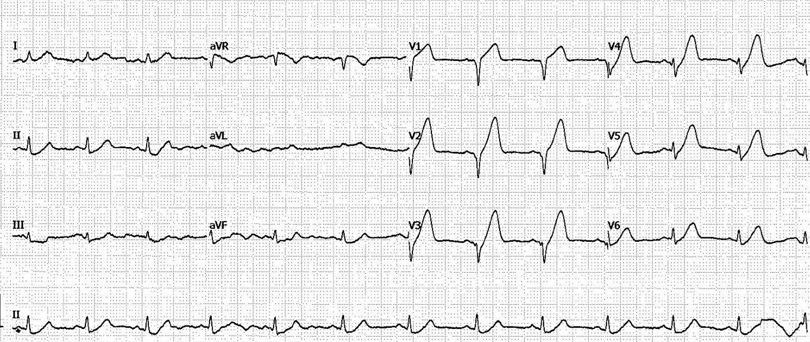
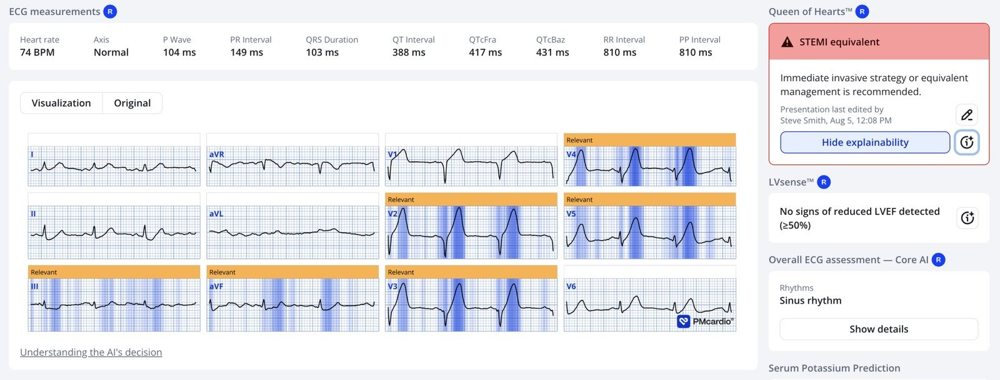
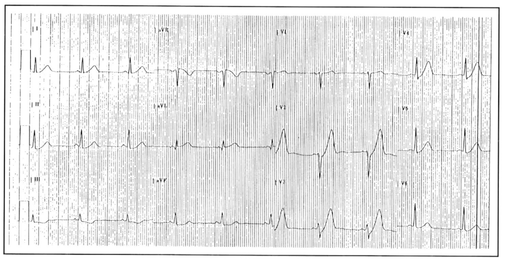
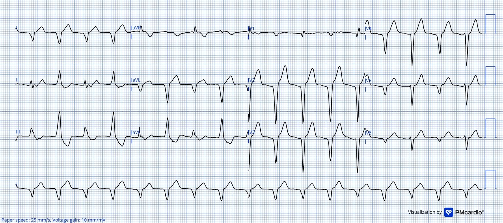
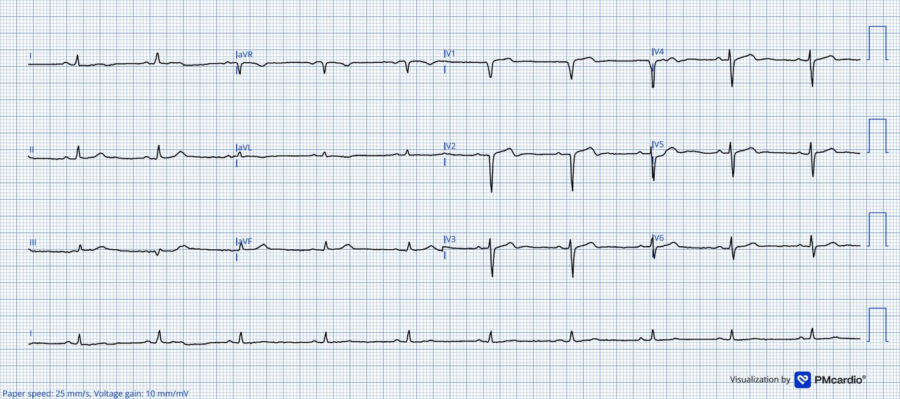
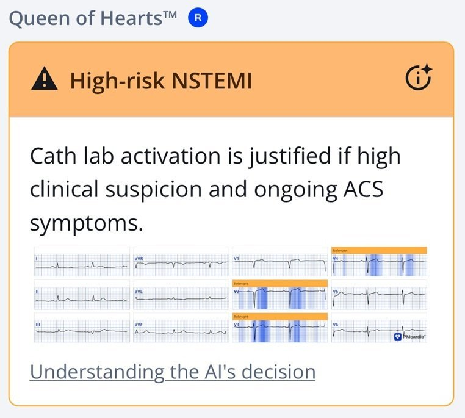
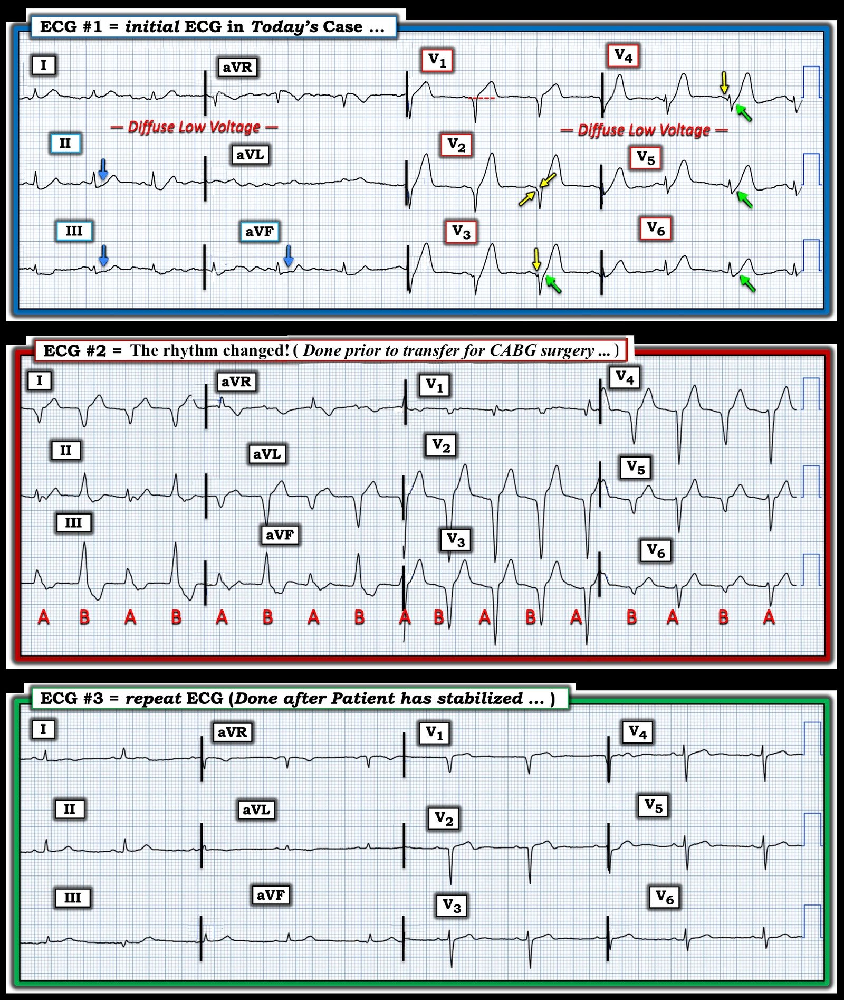

15/10/2026 — Nam giới 50 mấy tuổi đau ngực cấp
Bản dịch tiếng Việt của bài "50 something male with acute chest pain" – Dr. Smith’s ECG Blog. Giữ nguyên toàn bộ 7 hình ảnh của bản gốc.
Tác giả: Magnus Nossen .
Điện tâm đồ này của một người đàn ông ở độ tuổi đầu 50, có tiền sử thuyên tắc phổi hai bên, đến viện vì khó thở cấp và đau ngực. Bạn sẽ diễn giải điện tâm đồ này như thế nào?
Điện tâm đồ #1


Bạn nghĩ gì?
Điện tâm đồ này cho thấy nhịp xoang 74 nhịp/phút. Thời gian QRS bình thường. Có mất sóng R ở các chuyển đạo V1-V3, chỉ còn sóng R rất nhỏ ở chuyển đạo V4. Điểm J chênh xuống ở các chuyển đạo V3-V6, với đoạn ST đi lên dốc dẫn vào các sóng T tối cấp. Hình ảnh này hoàn toàn mang tính chẩn đoán OMI do tắc LAD (trong y văn gọi là “sóng T de Winter”).
Dưới đây là kết quả đọc của mô hình AI điện tâm đồ PMCardio Queen of Hearts:


Giá trị số trả về là 1.00 (mức độ tin cậy cao nhất có thể)
Với độc giả của blog này — hình ảnh trên điện tâm đồ #1 được nhận ra ngay lập tức là OMI do tắc LAD.
- Một ghi chú về lịch sử — dấu hiệu sóng T cao ở các chuyển đạo trước tim kèm điểm J chênh xuống này được CS Soo mô tả đầu tiên trong một báo cáo ca bệnh năm 1995 (chứ không phải bởi de Winter).
- Dưới đây là điện tâm đồ từ báo cáo ca bệnh gốc năm 1995 này (Soo CS — Singapore Med J: 36:216, 236-237, 1995).


Quay lại ca bệnh:
Thuật toán máy tính đọc điện tâm đồ #1 là: “Nhịp xoang bình thường, QRS điện thế thấp; không thể loại trừ nhồi máu trước vách, không xác định được thời điểm”.
- Từ lúc đến bệnh viện (và ghi điện tâm đồ #1) cho đến khi kích hoạt phòng thông tim — đã trôi qua 60 phút. Khoảng thời gian này là quá dài đối với một bệnh nhân có điện tâm đồ cho phép chẩn đoán ngay lập tức. Sự chậm trễ này nhiều khả năng phản ánh việc không nhận ra điện tâm đồ #1 là một tương đương STEMI.
- Mô hình AI Queen of Hearts đã xác định điện tâm đồ #1 là OMI, như trình bày ở trên.
Chụp mạch vành cho thấy: “LAD hẹp 90%; LCx hẹp 50%; OM1 hẹp 99%”.
- Dòng chảy TIMI 3 được ghi nhận ở tất cả các động mạch vành, và người ta quyết định rằng xử trí tốt nhất cho bệnh nhân là phẫu thuật CABG.
- Troponin I quy ước ban đầu là 27ng/L (tham chiếu < 40ng/L).
- Không thực hiện PCI vào thời điểm này.
Sau thông tim, trong lúc đang sắp xếp chuyển bệnh nhân đến một cơ sở có phẫu thuật tim-lồng ngực — điện tâm đồ #2 được ghi.
- Điện tâm đồ ghi lại này cho thấy thay đổi đáng kể so với điện tâm đồ lúc nhập viện.
- Chuyện gì đang xảy ra? Bạn sẽ xử trí thế nào?
= = =
Điện tâm đồ #2


Điện tâm đồ #2 cho thấy một nhịp QRS rộng, đều, tần số 103 nhịp/phút. Các phức bộ QRS âm hoàn toàn ở chuyển đạo I và aVL, và chủ yếu âm ở các chuyển đạo ngực. Có thay đổi hình thái QRS từ nhát này sang nhát khác. Kèm theo đó là trục thay đổi nhẹ, nhưng không đến mức như trong VT hai chiều (bidirectional VT), khi trục QRS thường luân phiên 180 độ. (Để ôn lại về VT hai chiều, hãy xem ca này, ca này và ca này).
= = =
Điện tâm đồ #2 phù hợp với AIVR (nhịp tự thất gia tốc — Accelerated IdioVentricular Rhythm) với 2 ổ tự động. AIVR hầu như luôn là đơn ổ — nhưng trên điện tâm đồ #2 rõ ràng có 2 ổ tự động luân phiên, giải thích cho 2 hình thái QRS khác biệt.
- AIVR được nhận ra nhờ phức bộ QRS rộng, đều, không có sóng P đi trước và tần số tương đối chậm so với VT
- AIVR thường được dung nạp tốt và hiếm khi cần can thiệp. Trong đa số trường hợp, mấu chốt là nhận ra có AIVR và biết rằng nó hầu như không bao giờ cần điều trị tích cực.
- AIVR là một rối loạn nhịp do tái tưới máu thường gặp, điển hình xảy ra với tần số 60–110 nhịp/phút. Nhịp này thường thoáng qua, thường chỉ kéo dài vài phút, hiếm hơn là vài giờ đến vài ngày. Nhịp này do tăng tính tự động gây ra và thường là đơn ổ, khác với nhịp thấy trong ca này.
- Nhìn chung, AIVR là một dấu hiệu tiên lượng thuận lợi, gợi ý đã có tái tưới máu mạch vành.
Về lâm sàng — bệnh nhân hôm nay ổn định huyết động vào thời điểm ghi nhận điện tâm đồ #2. Cơn đau ngực của bệnh nhân đã hết.
- Không có điều trị đặc hiệu nào cho AIVR hai ổ trong ca hôm nay; nhịp này tự hết sau một khoảng thời gian ngắn.
- Mô hình AI Queen of Hearts đã không nhận ra trường hợp AIVR này là một điện tâm đồ tái tưới máu.
= = =
Điện tâm đồ #3 được ghi khoảng 12 giờ sau khi nhập viện và ngay trước khi chuyển đi phẫu thuật CABG. AIVR không tái phát — và nhịp xoang bình thường đã được thiết lập. Lưu ý rằng các dấu hiệu tái tưới máu nay đã rõ trên điện tâm đồ #3, thể hiện qua các sóng T tái tưới máu thành trước kín đáo.
- Như trình bày bên dưới — Queen of Hearts xếp các hình ảnh tái tưới máu vào nhóm NSTEMI nguy cơ cao.
- Troponin I tăng lên 3960ng/L nhưng không được đo đến đỉnh.
- Không có dữ liệu theo dõi lâu dài của bệnh nhân này.
Điện tâm đồ #3




= = =
Những điểm cần học:
- Với một điện tâm đồ mang tính chẩn đoán (như điện tâm đồ #1) — thời gian từ lúc đến viện đến phòng thông tim phải ngắn hơn đáng kể so với 60 phút.
- AIVR xảy ra trong bối cảnh OMI cấp là một rối loạn nhịp do tái tưới máu. Trong đa số trường hợp — không cần điều trị.
- AIVR hầu như luôn đơn ổ và đơn dạng. Tuy nhiên, như ca hôm nay minh họa — AIVR có thể biểu hiện các hình thái QRS luân phiên.
= = =
==================================
BÌNH LUẬN CỦA TÔI, bởi KEN GRAUER, MD (31/7/2026):
Tôi thấy ca hôm nay đáng quan tâm vì nhiều lý do:
- Ca này làm nổi bật một số đặc điểm quan trọng của hình ảnh sóng T de Winter hôm nay — cùng với thực tế đáng thất vọng là ngay cả khi sóng T de Winter rõ ràng mang tính chẩn đoán, hình ảnh này vẫn bị bỏ sót (như ban đầu đã xảy ra trong ca hôm nay).
- Ca này đặt ra câu hỏi: khi nào thì an toàn để trì hoãn tái tưới máu bằng PCI ở một bệnh nhân bệnh nhiều nhánh mạch vành đã được lên lịch CABG vào ngày hôm sau?
- Ca này dạy chúng ta về một rối loạn nhịp hiếm gặp nhưng rất quan trọng mà chúng ta cần biết.
= = =
Điện tâm đồ ban đầu hôm nay …
Như Dr. Nossen đã nêu, điện tâm đồ ban đầu hôm nay (mà tôi đã tái hiện trong Hình 1) — lẽ ra phải được nhận ra là đủ chắc chắn để ngay lập tức kích hoạt phòng thông tim.
- Các sóng T de Winter kinh điển hiện diện ở các chuyển đạo từ V2 đến V6 trên bản ghi ban đầu hôm nay. Ý tôi là bắt đầu từ điểm J chênh xuống (các mũi tên MÀU XANH LÁ trên điện tâm đồ #1 ) — nhánh lên của sóng T dốc đứng, kết thúc bằng một sóng T khổng lồ (cao tới 10 mm ở các chuyển đạo V3,V4) — với đỉnh sóng T “phình to” và đáy sóng T rộng hơn dự kiến.
- Lưu ý rằng hình dạng của sóng T tối cấp ở chuyển đạo V1 khác với hình dạng của các sóng de Winter ở các chuyển đạo từ V2 đến V5. Thay vì các sóng T đi lên dốc dạng lõm (concave-up) như ở các chuyển đạo ngực còn lại — có hiện tượng thẳng đuỗn của đoạn khởi đầu ST của sóng T quá “đầy đặn” (tối cấp) này ở chuyển đạo V1, đồng thời có ST chênh lên tại điểm J. Điều này gợi ý mạnh một tổn thương LAD rất gần.
- ST chênh xuống soi gương ở từng chuyển đạo thành dưới (các mũi tên MÀU XANH LAM ở các chuyển đạo II,III,aVF) — càng ủng hộ thêm một tổn thương LAD đoạn gần nguy hiểm hơn.
- Lưu ý điện thế thấp lan tỏa (có ở cả 12 chuyển đạo). Như chúng tôi thường nhấn mạnh trên Dr. Smith’s ECG Blog — trong số nhiều nguyên nhân có thể gây điện thế thấp có nhồi máu cấp diện rộng kèm “choáng” cơ tim (điều này cần cảnh báo người điều trị về khả năng sắp xảy ra sốc tim — Xem bài ngày 3 tháng Tám năm 2025 để biết thêm về các nguyên nhân và ý nghĩa của điện thế thấp).
- Cuối cùng — Không chỉ có sóng QS ở các chuyển đạo V1,V2,V3 — mà phần trát đậm ban đầu trên sườn xuống của sóng S ở các chuyển đạo V2,V3 (các mũi tên MÀU VÀNG trên điện tâm đồ #1) — cùng với sóng q nhỏ ban đầu ở chuyển đạo V4 và biên độ sóng R giảm rõ ở các chuyển đạo V4,V5,V6 — khẳng định đã có nhồi máu thành trước diện rộng vào một thời điểm nào đó trước đây.
Nhận định lâm sàng của tôi về điện tâm đồ ban đầu:
- Một nhồi máu cấp diện rộng rõ ràng đang diễn ra trong ca hôm nay! Chỉ cần nhìn điện tâm đồ #1 và biết bệnh sử được cung cấp (tức là một người đàn ông ở độ tuổi 50 đến viện vì đau ngực và khó thở cấp) — tôi hoàn toàn dự đoán kết quả thông tim sẽ cho thấy tắc cấp LAD đoạn gần.
- Liệu trước đó đã có một nhồi máu thành trước cũ, nay chồng thêm tắc LAD mới — hay toàn bộ các dấu hiệu ở chuyển đạo ngực trên điện tâm đồ #1 phản ánh một biến cố cấp duy nhất, diện rộng, đang diễn ra — thì chưa thể chắc chắn với bệnh sử hạn chế này và khi không có bản ghi cũ.
- Kết quả thông tim do Dr. Nossen cung cấp cho thấy bệnh nhiều nhánh mạch vành nặng mà không nêu rõ mạch “thủ phạm” cấp tính — kèm phát hiện bất ngờ là tổn thương nặng nhất không phải LAD, mà là chỗ hẹp 99% của OM-1.
- Một lần nữa, trong bối cảnh các dấu hiệu nêu trên — điện thế thấp lan tỏa làm dấy lên lo ngại “choáng” cơ tim kèm suy giảm nặng chức năng thất trái.
= = =
Hình 1: Các bản ghi liên tiếp của 3 điện tâm đồ trong ca hôm nay.


= = =
Và rồi Nhịp thay đổi …
Như đã nêu ở trên trong phần bàn luận của Dr. Nossen, mặc dù thông tim cho thấy bệnh nhiều nhánh mạch vành nặng — troponin ban đầu bình thường, và bệnh nhân có vẻ ổn định huyết động. Do đó — người ta quyết định không thực hiện PCI, mà thay vào đó chuyển bệnh nhân đến một cơ sở có khả năng phẫu thuật CABG. Và rồi nhịp thay đổi … (như thấy trên điện tâm đồ #2).
- Như Dr. Nossen mô tả — điện tâm đồ #2 biểu hiện 2 hình thái QRS khác biệt, chuyển qua lại với mỗi nhát ( = các phức bộ luân phiên được đánh dấu “A” và “B” ). Cả hai hình thái đều có QRS rộng. Không có sóng P. Khoảng R-R giữa các phức bộ có vẻ tương đối hằng định, với tần số tim gần 100/phút.
- Nhận định: Đây rõ ràng là một nhịp thất với 2 hình thái QRS khác nhau luân phiên cách một nhát.
Chẩn đoán phân biệt của tôi đối với nhịp trên điện tâm đồ #2 gồm 3 khả năng:
- i) AIVR với 2 ổ thất (tôi sẽ gọi đây là “AIVR hai ổ” ).
- ii) VT hai chiều.
- iii) AIVR từ một ổ thất duy nhất, nhưng với các vị trí thoát ra luân phiên hoặc với sự biến thiên từ nhát này sang nhát khác của vòng vào lại lạc chỗ.
Chúng tôi đã trình bày các ví dụ về VT hai chiều (BiDirectional VT) (Xem phần Bình luận của tôi ở cuối trang trong bài ngày 18 tháng Hai năm 2026, cùng nhiều bài khác). Về nhiều mặt — AIVR hai ổ và VT hai chiều trông giống nhau ở chỗ cả hai đều là nhịp thất đơn thuần biểu hiện 2 hình thái QRS luân phiên. Về lý thuyết — khác biệt giữa 2 thực thể này bao gồm:
- VT hai chiều có xu hướng là một dạng VT nhanh hơn, với sự luân phiên trục QRS chặt chẽ hơn, trục thường lật ~180 độ từ nhát này sang nhát kế tiếp (thường giống như luân phiên giữa hình ảnh dẫn truyền LBBB và RBBB). Kiểu luân phiên hình thái QRS trong VT hai chiều thường biểu hiện các khoảng R-R luân phiên dài-rồi-ngắn.
- Ngược lại — AIVR hai ổ có xu hướng là một dạng nhịp thất chậm hơn, biểu hiện khoảng R-R đều hơn với mức lệch trục ít cực đoan hơn giữa 2 hình thái thất. Sự biến thiên từ nhát này sang nhát khác kém nhất quán hơn — đến mức một hình thái QRS có thể chiếm ưu thế trong một khoảng thời gian rồi mới chuyển trở lại hình thái QRS kia. Và có thể thấy nhiều hơn 2 hình thái QRS khác nhau.
- Làm phức tạp thêm việc phân biệt VT hai chiều với AIVR hai ổ — là thực tế rằng các hình thái QRS luân phiên trong một nhịp thất có thể là kết quả của các vị trí thoát ra kép (hoặc nhiều vị trí), hoặc các “vòng” VT kép, hoặc sự thay đổi đặc tính dẫn truyền trong cùng một vòng làm thay đổi trình tự hoạt hóa (Xem phần Bình luận của tôi trong bài ngày 1 tháng Sáu năm 2020).
Điều cốt lõi ( = Suy nghĩ của tôi) — Không phải lúc nào cũng dễ phân biệt VT hai chiều với AIVR hai ổ, vì giữa 2 thực thể này có thể có sự chồng lấp.
- Về lâm sàng — Ý nghĩa của việc xác định dạng VT nào đang hiện diện nằm ở kết cục dự kiến. Cả VT hai chiều và AIVR hai ổ đều có thể xảy ra kèm thiếu máu cục bộ cấp/OMI.
- AIVR hai ổ có xu hướng diễn biến lâm sàng giống AIVR đồng dạng phổ biến hơn nhiều — vốn hầu như luôn là dấu hiệu “tốt” cho thấy đã có tái tưới máu mạch “thủ phạm”. Trong bối cảnh này — AIVR (đồng dạng hay hai ổ) thường là một nhịp thoáng qua, không cần điều trị, vì nó hầu như luôn “tự biến mất” trong vòng vài phút hoặc vài giờ.
- Ngược lại — VT hai chiều phát sinh do thiếu máu cục bộ cấp là một nhịp nguy hiểm hơn nhiều, có nguy cơ chuyển thành rung thất (VFib).
= = =
Áp dụng điện tâm đồ #2 vào ca hôm nay:
Dr Nossen trong phần bàn luận đã truyền đạt “tin tốt” trong ca hôm nay.
- Các đặc điểm gợi ý nhịp trên điện tâm đồ #2 là AIVR hai ổ (chứ không phải VT hai chiều) — là tần số thất chung chậm hơn, mức lệch trục giữa 2 hình thái thất ít cực đoan hơn — và bệnh nhân ổn định huyết động.
- Do đó — người ta quyết định không điều trị nhịp này bằng bất kỳ cách nào, và nhịp xoang đã trở lại trong một khoảng thời gian ngắn.
= = =
Điện tâm đồ cuối cùng trong ca hôm nay …
Như Dr. Nossen nêu — điện tâm đồ #3 được ghi ~12 giờ sau điện tâm đồ #1, ngay trước khi chuyển bệnh nhân đến cơ sở có khả năng phẫu thuật CABG.
- Quay lại Hình 1 — Chúng ta thấy hầu như tất cả các thay đổi ST-T cấp có trên điện tâm đồ #1 đều đã xẹp xuống.
- Có những dấu hiệu điện tâm đồ cho thấy ngay cả khi không có PCI — đã có phần nào tái tưới máu tự phát (tức là nay thấy sóng T bắt đầu đảo ngược ở các chuyển đạo aVL và V2, có lẽ cả ở các chuyển đạo ngực khác).
- Các dấu hiệu điện tâm đồ đầy hứa hẹn khác trên điện tâm đồ #3 bao gồm sự trở lại của sóng R ban đầu ở các chuyển đạo V3,V4 — và biên độ QRS tăng nhẹ ở các chuyển đạo từ V2 đến V6.
= = =
= = =